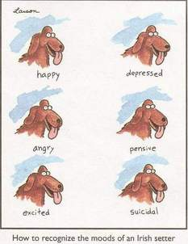

Sometimes it is hard to put your emotions and feelings on paper. The following patterns for poems are designed to allow you to get used to putting what are sometimes abstract concepts into writing.
Directions: Follow one of the patters below:
Pattern #1Line #1: What if ____________________________
Line #2: I might ____________________________
(leave a space between lines 2 & 3)
Line #3: What if ____________________________
Line #4: I could _____________________________
(leave a space between lines 4 & 5)
Line #5: What if ____________________________
Line #6: I would_____________________________
(leave a space between lines 6 & 7)
Line #7: Ask a question.
Pattern #2Line #1: When I _____________________________ (describe an action)
Line #2: ____________________________________ (describe where action takes place)
Line #3: (Write 2 to 3 words that describe how you feel)
Line #4: I wish I could_________________________ (describe an action)
Line #5: (Tell the reason why)